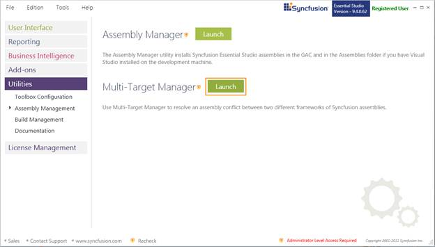
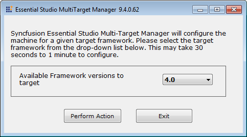
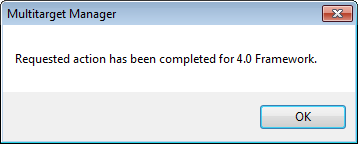

MultiTarget Manager helps in managing multiple .NET frameworks in your Visual Studio 2008 project i.e., [Switching between multiple framework].
 Note: This is not essential for VS 2010 because
Common Language Runtime (CLR) is differs for both 3.5 and 4.0 frameworks. VS
2010 selects the required .NET framework assembly for the corresponding
projects. 3.5 and 4.0 are the only frameworks configured; MultiTarget Manager
utility allows you to work on Framework 2.0 with VS 2010.
Note: This is not essential for VS 2010 because
Common Language Runtime (CLR) is differs for both 3.5 and 4.0 frameworks. VS
2010 selects the required .NET framework assembly for the corresponding
projects. 3.5 and 4.0 are the only frameworks configured; MultiTarget Manager
utility allows you to work on Framework 2.0 with VS 2010.
When to Use MultiTarget Manager?
When Essential Studio is installed in a machine comprising both 2.0 and 3.5 frameworks, then by default target framework set to 3.5 and the following registry entry AssemblyFoldersEx is also set to 3.5 assemblies. You can use the Multi-Target Manager to change the target framework to 2.0.
HKLM\Software\Microsoft\.NetFramework\v2.0.50727\AssemblyFoldersEx\Syncfusion Essential Studio 3.5
Launching MultiTarget Manager
1. Open Syncfusion Dashboard.
2. Click Utilities > Assembly Management.
3. Click Launch button for Multi-Target Manager.

Figure 123: Assembly Management
Note: You can also open the Multi-Target Manager
from the following location:
{Installed location}\Syncfusion\Essential Studio\x.x.x.x\ Utilities\MultiTargetManager\ MultiTargetManager.exe
4. The Essential Studio MultiTarget Manager x.x.x.x dialog box opens.

Figure 124: Essential Studio MultiTarget Manager x.x.x.x Dialog
5. Select the required version from the drop-down. The Multitarget Manager dialog will open.

Figure 125: Multitarget Manager
6. Click OK.
7. Open an application.
8. Refresh the application before build.
Note: The target value and the registry value will
be changed to the selected framework version.